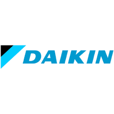
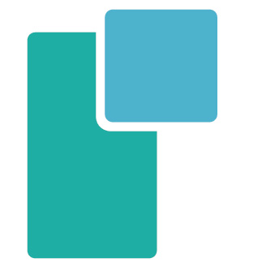
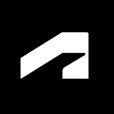
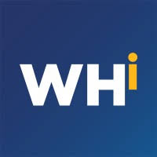

// Automation · Quality · DFM · PCB Design
I genuinely enjoy building circuits, designing PCBs, and figuring out how to make processes run better than they have any right to. Whether it's wiring up a board from scratch or hunting down the one step in a workflow that's slowing everything down — that's my kind of problem.
I'm Arsalan, born and raised in Houston, Texas. Pakistani-American and proud of it — I genuinely love my culture, the food, the people, the hospitality. All of it.
In my free time I'm usually watching sports — basketball, football, tennis. Soccer too, but honestly only when the Euros or World Cup are on. Big Luka Dončić and Kyrie Irving fan. Imagine if those two ever played on the same team. Actually insane to think about.
When I'm not watching sports I'm probably watching reels or doomscrolling. Classic. But I do actually play sports too — pickleball, basketball, tennis, badminton, ping pong. Love all of them, especially with friends.
Family and friends are a huge part of my life. As a South Asian, that's just built into the culture and honestly I love that it is. Good food, good people, good times.
Mechanical engineering student at Texas A&M University with a focus on making manufacturing smarter, more reliable, and more efficient. My work spans hardware and process — from designing PCBs to optimizing production workflows.
I care about design for manufacturability — building things that aren't just functional on paper, but practical and scalable on the floor. I approach quality not as a checklist, but as something engineered into the product from the start.
Whether it's automating a repetitive inspection step, laying out a PCB that's actually easy to assemble, or running a root cause analysis — I like solving the problems that sit at the edge of design and production.

Daikin
PPSI
Autodesk
West Houston InstituteJoining Daikin Comfort Technologies to support manufacturing quality systems, process improvement, and production operations for one of the world's leading HVAC manufacturers.
Embedded with an engineering team at a PCB manufacturer supporting aerospace and high-reliability products across SMT production, AOI testing, quality control, and process improvement.
Representing Autodesk on campus by promoting design tools like Fusion 360, supporting fellow students in learning CAD, and connecting the engineering community with Autodesk's software and resources.
Selected for NASA's competitive NCAS program, engaging with real aerospace mission design challenges and systems engineering curriculum alongside NASA engineers and scientists.
Trained and certified users on fabrication equipment including 3D printers and laser cutters, maintained machines, and guided students through design-to-prototype workflows.
Designed a custom SpO2 sensor board for blood oxygen monitoring. Handled analog front-end layout, component selection, and fabrication-ready Gerber output with DFM considerations.
Designed a Bluetooth Low Energy jammer board for RF research purposes. Focused on RF trace routing, impedance matching, antenna placement, and compact 2-layer layout.
Reverse-engineered and redesigned an open-source AirTag-compatible tracker board. Replicated key UWB and BLE functionality in an accessible, modifiable form factor using publicly available components.
Designed and 3D printed a multi-stage gearbox assembly in SolidWorks. Applied GD&T tolerancing and DFM principles for printability, fit, and functional clearance between mating components.
Collaborated with Boeing engineers and Cornell students to redesign the truss connection and solar array insertion mechanism on an ISS mimic structure. Conducted FMEA, applied SolidWorks modeling, and visited NASA's Neutral Buoyancy Lab.
Ran a full DMAIC (Define, Measure, Analyze, Improve, Control) cycle on a simulated production process. Identified root causes of defect variation, applied statistical analysis, and proposed control measures to sustain improvements.
Built a Python CSV-to-CSV cross-checker that validates customer BOMs against SMT machine pick-and-place files before production runs begin. Flags part number mismatches, missing DNPs, and quantity discrepancies automatically.
Programmed a simulated conveyor sorting system using Ladder Logic on a PLC platform. Implemented sensor interlocks, motor control rungs, and fault handling logic to manage part diversion at two downstream stations.
Developed a batch process control sequence using Structured Text (IEC 61131-3) to manage a simulated fill-and-seal operation. Implemented state machine logic, timer-based transitions, and alarm conditions.
I'm actively looking for internships, co-ops, and project collaborations in automation, quality engineering, DFM, or PCB design. If you're building something and need someone who cares about the details — let's talk.